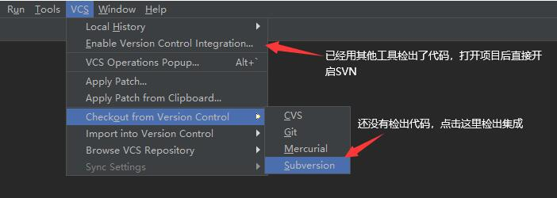
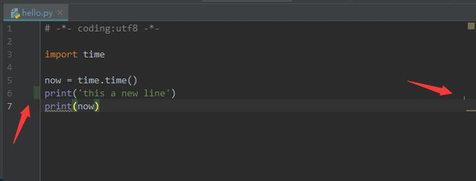
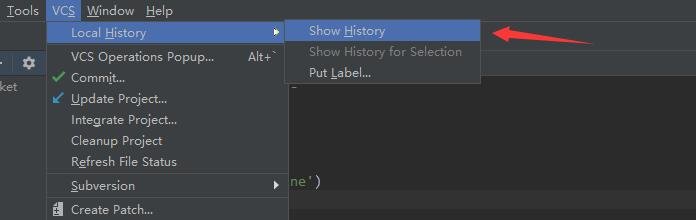

Pycharm中使用SVN的配置教程
2021年5月12日
本文讲解如何在Pycharm中开启SVN，以及他的一些日常使用方法
开启SVN
开启 svn 分两种情况，还未检出代码的，Pycharm 里直接检出就继承好了。
已经用其他SVN客户端（例如TortoiseSVN）检出代码的，开启下 SVN 就好了，如下图：

开启成功后，你应该可以看到如下图状态，在这里我们就可以快速的更新代码、提交代码
功能介绍
集成后，在Pycharm的左下角可以看到一个 Version Control的界面，这里可以看到哪些文件变动了
另外 Pycharm 有个很方便的地方，你改动的行会有特殊的颜色表示，这样写代码时很容易就知道哪些地方修改过，方便快速定位

Pycharm还自己有一个本地修改记录，如下图，从我创建hello.py，修改内容，到提交到svn，每次的修改都有记录，非常方便。
特别是在有时候你一部小心破坏了代码，但是又没提交到SVN，这时候从本地记录里面总能找到你的历史。

最后是提交界面，能方便的看到哪些文件变动了，改了什么东西
更多SVN的常用操作，可以查看SVN使用教程